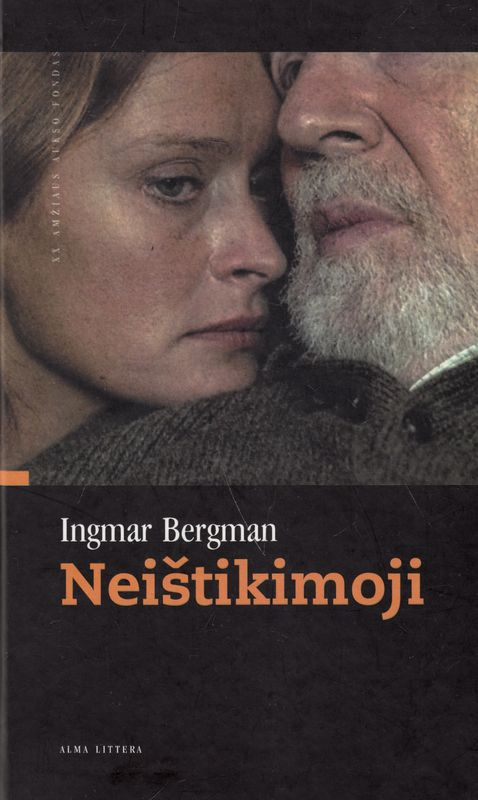

Skaitytų knygų knygynas | Skaitytos knygos | geraknyga.lt
 Skip to content PRADŽIA KATALOGAS KNYGŲ SUPIRKIMAS SUSISIEKIME REKVIZITAI KREPŠELIS
Naujausios knygos
Rinktiniai laiškai K. Marksas, F. Engelsas € 3.90 Į krepšelį Geopolitiniai mitologijos aspektai ir šiuolaikiniai baltai Laima Kastanauskaitė € 5.90 Į krepšelį Gotos programos kritika Karlas Marksas € 1.20 Į krepšelį Senovės Indijos mitai E. Tiomkinas, V. Ermanas € 2.90 Į krepšelį Paskutinė respublika (1 knyga): Kodėl Sovietų sąjunga pralaimėjo Antrąjį pasaulinį karą? Viktoras Suvorovas € 2.90 Į krepšelį Kontrolė Viktoras Suvorovas € 2.70 Į krepšelį Lietuvos valstiečių judėjimas 1861-1914 metais M. Jučas, L. Mulevičius, A. Tyla € 5.90 Į krepšelį Specnazas: tikroji sovietinių specialiųjų pajėgų istorija Viktoras Suvorovas € 3.90 ParduotaKrepšelis
Knygų paieška
Produkto kategorijos
Pasirinkite kategoriją Aforizmai, mintys Albumai Antikvarinės knygos iki 1950 m. leidimo Architektūra, statyba, interjeras Astronomija Atsiminimai, biografijos Atvirukai Buitis Chemija Detektyvai Dokumentinė literatūra Elektrotechnika Etika Etnografija Ezoterika, parapsichologija, astrologija Fantastika Filosofija Fizika Fotografija Galvosūkiai, kryžiažodžiai Gamta, biologija, botanika Grožinė lietuvių autorių Grožinė užsienio autorių Humoras Informatika Išeivijoje leistos knygos Istorija Kalbotyra Karinė literatūra Katalogai Kelionės, vadovai, geografija Kinas, teatras, šokiai Knygos anglų kalba Knygos lenkų kalba Knygos prancūzų kalba Knygos rusų kalba Knygos vokiečių kalba Knygotyra Kolekcionavimas Kompaktiniai diskai Kūno priežiūra Literatūra Mada, stilius, grožis Matematika Medicina Medžioklė, žvejyba Meilės romanai Meistravimas Menas Mitologija Mokslo populiarinimo Muzika Naminiai gyvūnai Paaugliams, jaunimui Pedagogika, švietimas Poezija Politologija Pomėgiai Psichologija, sociologija Publicistika Rankdarbiai Receptai, virtuvė Religija Šachmatai, šaškės Seksologija Sodas, daržas, gėlės Sportas Su autografais Sveikata Technika, mechanizmai Teisė, kriminalistika Tėveliams, mamoms Transportas Tremtis, pasipriešinimas Užsienio kalbų mokymas Vadovėliai Vaikams Verslas, vadyba, ekonomika Žemės ūkis Žinynai, enciklopedijos Žodynai ŽurnalaiKontaktai
Vilnius, Laisvės pr. 58 (pagrindinis įėjimas į Tarptautinę teisės ir verslo aukštąją mokyklą, 1 aukštas). II,III,IV,V – 11-19 val. VI – 11-15 val. Sekmadienį, pirmadienį ir valstybinių švenčių dienomis knygynas nedirba. 8 675 91595 geraknyga.lt@gmail.comMeniu
Krepšelis Apmokėjimas Paskyra Kur įsigyti Taisyklės ir sąlygos Slapukų politika Prekių pristatymas Atsiskaitymo būdai Knygų kokybė“geraknyga.lt” nuotraukų galerija
Knygos žyma
anglų apsakymai apysaka apysakos archeologija augalai dailė dainos dvikalbė eilėraščiai esė gydymas indėnai istorinis italų kultūra Lietuva lietuvių maistas meilė mityba monografija natos norvegų novelės nuotraukos papročiai partizanai pasaka pasakos patarimai poema prancūzų romanas rusų tautosaka trilogija vaikai vaistažolės valgiai vilnius vokiečių šeima švedų žydai © 2020 geraknyga.lt MŪSŲ SVETAINĖ NAUDOJA SLAPUKUS Skaityti daugiau SUTINKU Slapukų politika ClosePrivacy Overview
This website uses cookies to improve your experience while you navigate through the website. Out of these cookies, the cookies that are categorized as necessary are stored on your browser as they are essential for the working of basic functionalities of the website. We also use third-party cookies that help us analyze and understand how you use this website. These cookies will be stored in your browser only with your consent. You also have the option to opt-out of these cookies. But opting out of some of these cookies may have an effect on your browsing experience. Necessary Necessary Always EnabledNecessary cookies are absolutely essential for the website to function properly. This category only includes cookies that ensures basic functionalities and security features of the website. These cookies do not store any personal information.
Non-necessary Non-necessaryAny cookies that may not be particularly necessary for the website to function and is used specifically to collect user personal data via analytics, ads, other embedded contents are termed as non-necessary cookies. It is mandatory to procure user consent prior to running these cookies on your website.